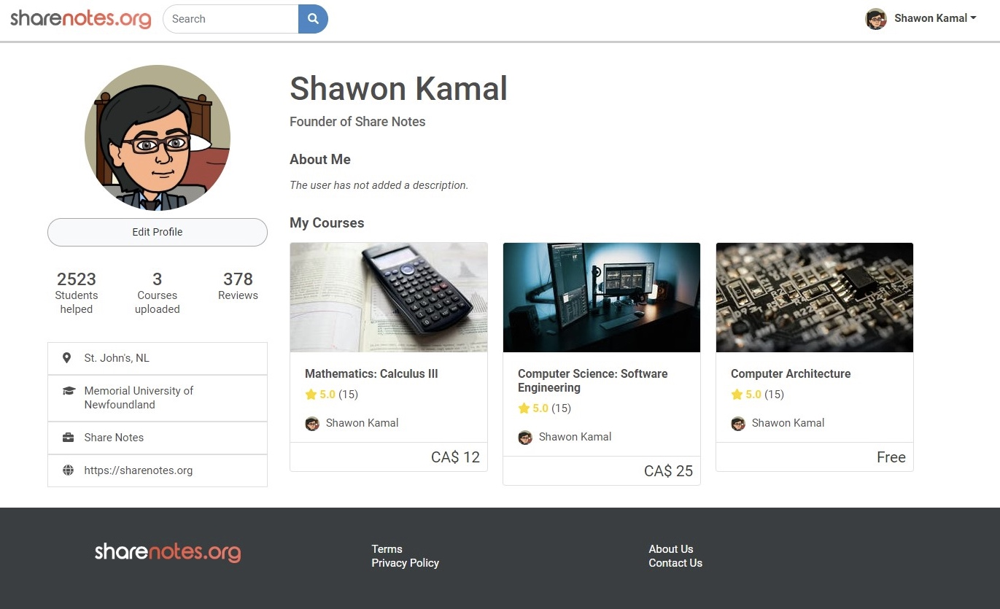
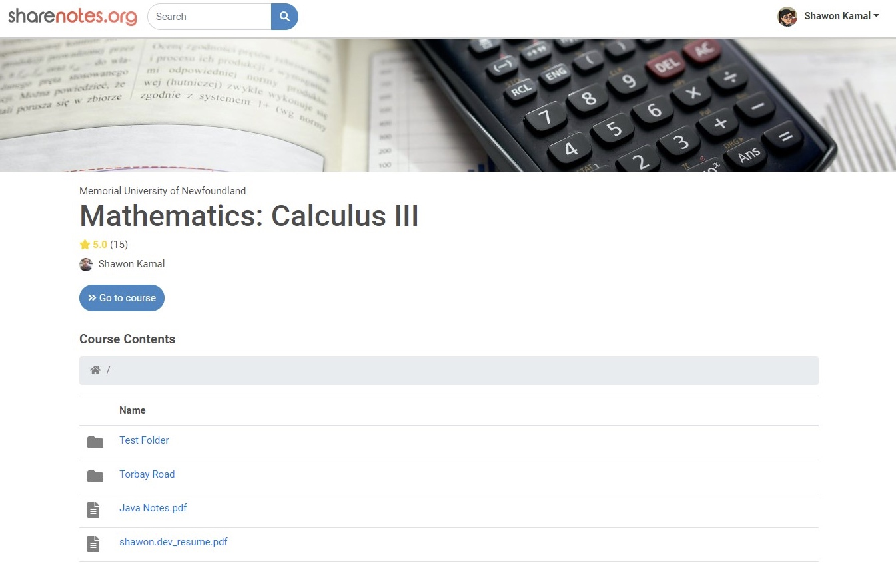
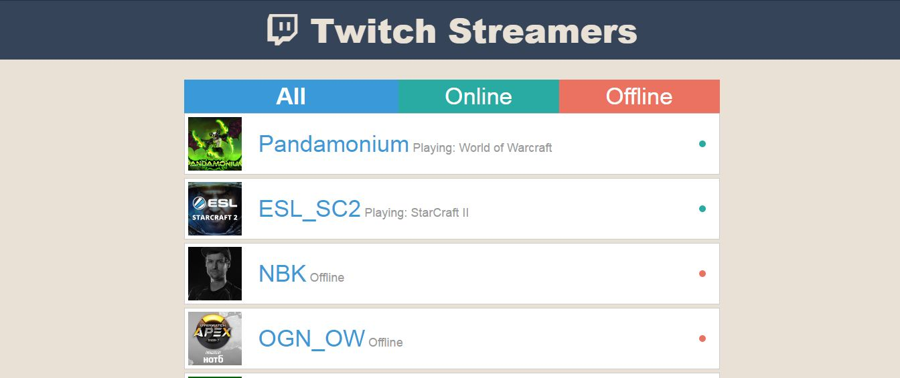

Mar 2020 - Present

Rebuilt Yaffle as part of Powered by b project. Yaffle is a collaboration site for researchers and project funders.
Dec 2019 - Present

The successor of Shawon Notes which is an educational resource platform targeting the British curriculum of high schools reaching over 100k+ monthly page views.

Built in REST API format using React and Laravel to ensure scalability and modularity as I continue to add more features and scale up the project. The workflow is managed through github actions and docker and deployed in Linux instances in AWS, and the files are managed through S3 bucket.
Users can registers their own account, customize their profile and create courses and upload materials as they wish. They can create directories, upload videos, or any kind of documents.
Received Spark Fund for getting started with this project from Memorial University.
Oct 2021 - Dec 2021
Automated Resume Screening application using Natural Language Processing and Machine Learning techniques to parse and evaluate resumes according to best fit to job description. The application is written is python and make use of several libraries such as nltk, scikit-learn, pandas, numpy etc.
Oct 2021 - Dec 2021
As part of 2 person group project, we figured out how successful Tely10 has been in the past 10 years identifying different goals and subgoals from the dataset, and by creating visualizations that address them. Our visualizations included an interactive bar plot to address gender diversity, a violin plot to address gun time trend, treemap to address location diversity and an interactive exploratory venn diagram for returning racers trend. Techonologies used were python and several libraries including matplotlib, pandas, seaborn, squarify and ipywidgets.
Sep 2021 - Dec 2021
A 2D game-engine with a level editor built by a group 4 for final project in Game Programming course using SFML and C++. The game built on it in Dudeforce which is a side-scrolling shooting game. It makes use of shaders, lighting, inventory, multiple camera-views, overworld map and much more.
Oct 2020 - Aug 2021

Dynamic portfolio management website where user can register accounts and easily setup their portfolio.
Built using REACT, Laravel and MySQL in REST API format.
Sep 2019 - Dec 2019
Finds the closest path between each nodes using Q-Learning.
Built using Javascript.
Jan 2021 - Apr 2021
Plays the game of Starcraft: Broodwar as Protoss race using real time Artificial Intelligence decisions using C++ and BWAPI.

Beats the built-in AI of the game using "Zealot Rush" strategy that includes scouting, appropriate building placement, proper build order, and timing attacks.
Sep 2021 - Oct 2021
Built using SFML and C++.
May 2021 - May 2021
Visualization of Yaffle researchers and contributors using D3.js and the projects they collaborated on.
Mar 2021 - Apr 2021

An ecommerce web scraper namely Best Buy and Walmart. It retrieves product data from the data given the url, and tracks the stock information, price changes and availibility on each update.
Built as part of a group project of 3 using node.js and mongoDB.
Jan 2021 - Apr 2021

Demonstrating Mean filter, Salt and pepper filter and Gaussian blur using Python.
Jan 2021 - Feb 2021

Uses Random Number Generation to generate a star system that consists of randomized stars, planets, moon each with a unique position, temperature, size, and name.

Generated terrain of planets to show land, rocks, and water using Cellular Automata built using C++, SFML, and Visual Studio.
Jan 2021 - Jan 2021

Calculates the distance of each grid from the target and then uses it to compute a vector field to point to the direction.
Sep 2019 - Dec 2019
Game of Blokus built using Java Swing. Allows users to select a sequence of blocks, rotate it and place it on the grid. User can also turn on visual aid toggle if they are colorblind.
Sep 2019 - Dec 2019

Game of checkers built using D3.js and AI implemented using mini-max algorithm.
Sep 2019 - Sep 2019

Game of Chomp built using Java Swing. A 2-player game where the last user to eat the soap(pink) grid will lose.
Sep 2019 - Dec 2019

Built the AI for Connect 4 game using Mini-Max algorithm.
Jan 2021 - Jan 2021

Tron game AI bot built using C++ and SFML.
Sep 2019 - Dec 2019

Implemented reinforcement learning to maximize reward in the multi-armed bandit problem.
July 2017 - Aug 2017
A JS application that retrieves random quotes by famous people.
July 2017 - Aug 2017
A JS application that uses the wikipedia search api to retrieve articles based on keywords.
July 2017 - Aug 2017

Uses the open weather api to display weather of the user's current location.
July 2017 - Aug 2017
A JS application that uses the twitch api to retrieve information of my favorite twitch streamers.
Dec 2013 - Dec 2018

The first website I built where I shared my own study materials of IGCSE and IAL to help fellow students. It reaches over 100k page views each month and is the most popular IGCSE/IAL revision website in Bangladesh.